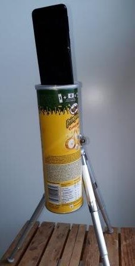

Contact
{kind=link}
- Nantes (France)
- téléphone: 06 16 46 49 81
- thomas-leon@wanadoo.fr
Présentation
Au cours de ma carrière à La Poste, j'ai travaillé dans différents environnements ce qui m'a permis
d'acquérir une culture variée tant d'un point de vue technique que des différents univers de La Poste.
Ma préoccupation principale est d'être à l'écoute de mes interlocuteurs pour leur proposer des solutions qui résolvent leur problème.
J'ai à cœur de partager mon expérience et de profiter de celle de mes collègues pour fiabiliser et pérenniser les résultats obtenus.
J'aime la salsa, le rock, les jeux de rôle, le bricolage, le cerf-volant ...
Je veux devenir concepteur développeur.
Motivations pour intégrer le parcours Simplon
Je souhaite
- Evolution : évoluer professionnellement pour devenir concepteur développeur.
- Créativité : voir se concrétiser ce que j'ai imaginé.
- Apprentissage : aprendre ce nouveau métier dans une ambiance de partage et de d'entraide.
- Découverte : décourir de nouveaux languages, environnemennts et outils.
- Amélioration : participer à l'amélioration des outils informatiques de La Poste.
Liens
Liens vers les sites d'autoformations et autres
{kind=link}
Divers
Cerf-volant
Trépied pour selfies
Parcours professionnel
Centre Opérationnel de Supervision de La Poste
Pilote d'exploitation
- Sécurité informatique : lutte contre la cyber criminalité
- Supervision du coeur de réseau et des infrastructures
- Réseaux
- Cyber-sécurité
Direction du support et de la maintenance : Siège de La Poste
Téchnicien réseaux et bureautique
- Installation, configuration et maintenance des éléments actifs des réseaux.
- Déploiement et maintenance des postes informatiques et téléphonie du siège de La Poste.
- Documentation, formation et assistance aux utilisateurs, gestion de comptes.
- Réseaux
- Bureautique
- Téléphonie
Direction du support et de la maintenance antène territoriale
Technicien Automates, réseaux et bureautique
- Installation, configuration et maintenance des éléments actifs des réseaux.
- Déploiement et maintenance des automates banquaires et postes informatiques en bureau de poste.
- Documentation, formation et assistance aux utilisateurs.
- Réseaux
- Automates bancaires
Service interieur immeuble Bachelard, La Poste
Technicien des installations
- Courants forts et faibles.
- Suivit des installations domotique, chauffage, climatisations, sécurité.
- électricité
- domotique
Piedfort-Electroma (Sous-traitant de Gaz de France)
Contrôleur, projeteur
- Dessin industriel.
- Contrôle, métrologie, qualité.
- Dessin
- Qualité
Formation
Formation initiale
-
1986
Baccalauréat E (Mathématique et technique)
-
1987 - 1989
DUT Génie mécanique
Formation continue
-
1989 - 2000
Développeur informatique au CNAM Conservatoire National des Arts et Métiers
-
1998 - 2021
Formations techniques réseaux, informatique, téléphonie, lutte contre la cyber criminalité
Autre
Langues
- Anglais
Centres d'intérêts
- Cerf-volant, salsa, rock, danses, jeux de rôles, bande dessinée, cinéma ...